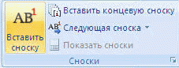

Сноска состоит из двух связанных частей: знака сноски (Знак сноски - число, знак или сочетание знаков, указывающие на наличие в сноске дополнительных сведений.) и текста сноски.
При перемещении, копировании или удалении автоматически нумеруемых сносок оставшиеся знаки сносок автоматически перенумеровываются.
Для добавления автоматической сноски:

Клавиши быстрого доступа. Для вставки следующей сноски нажмите клавиши CTRL+ALT+F. Для вставки следующей концевой сноски нажмите клавиши CTRL+ALT+D.
По умолчанию обычные сноски помещаются внизу страницы, а концевые — в конце документа.